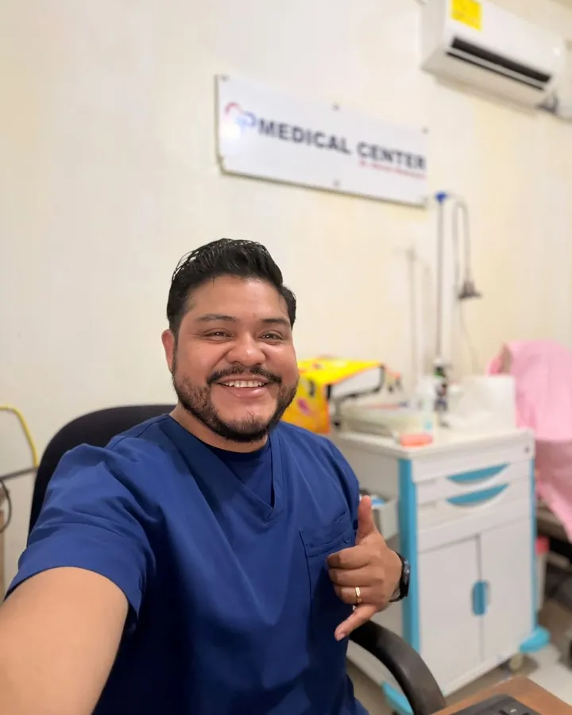

Tu salud merece un cuidado más cercano, también de madrugada.
Unidad de Diagnóstico UR · Medical Center, en Río Blanco, Matagalpa. En esta muestra podés reservar un cupo a cualquier hora, sin esperar a que alguien conteste el chat.

Agenda de demostración
Agendá tu cita, a cualquier hora.
Elegí servicio, profesional, día y hora. Recibís un código al instante y un resumen listo para WhatsApp. Los horarios son de ejemplo; en la versión real los define el centro.
Servicios
Consulta médica, diagnóstico y acompañamiento. Coordiná el cupo con la agenda de arriba. No publicamos precios en esta muestra.
Un equipo, no un solo consultorio
El Dr. Héctor Namoyure lidera la atención médica y el ultrasonido. Completan el equipo profesionales de planta y especialistas que visitan el centro en jornadas.
Urología (Dr. Alner Cruz), cardiología (Dr. Lenin López) y ginecología (Dra. Ximell Zavala) se atienden en fechas que anuncia el centro. En esta muestra, los sábados aparecen como jornada de ejemplo solo para que pruebes la agenda. No reutilizamos jornadas ya vencidas.
Cómo llegar
Frente al CDC, Río Blanco, Matagalpa, Nicaragua. En Google también figura como frente a la cancha municipal; conviene confirmar la referencia al visitar.
«Atención de calidad en Río Blanco, 100% recomendados!»
Contacto
En esta versión de muestra, las citas de prueba se envían a un número ficticio (505 0000 0000). Si activás «Probar como dueño», te llegan a tu propio WhatsApp. En la versión real llegarían al WhatsApp del centro.